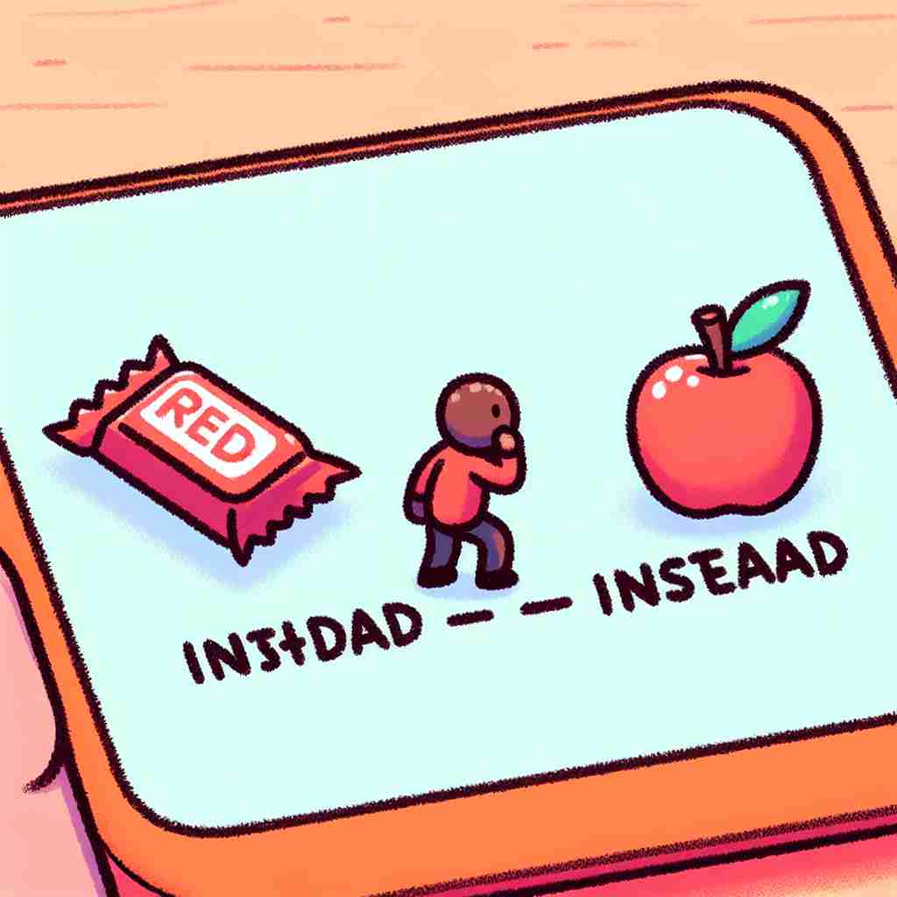

💬 They stayed home instead of going out in the rain.

💬 Tom is daydreaming instead of working during the meeting.

💬 She decides to choose an apple instead of candy.

💬 You should choose an apple instead of candy.
🔈 [ɪn'sted]
🗝️ adv. in place of someone or something else
🖼️ 在一个生日派对上，主角准备将一个大大的蛋糕端上桌。然而，她的朋友建议说不如让小杰克去切蛋糕。于是，大家都看着小杰克，他兴奋地走上前，代替主角切蛋糕，展示了'instead'作为替代某人或某物的含义。
🔍 'Instead' 源自古英语 'in stede'，意为'在...的位置上'。核心概念是'替代'或'取代'。想象一个位置被另一个人或物占据，这就是 'instead' 的基本用法。无论是提供替代选项，还是表示相反情况，都源于这个核心概念。记忆时，可以想象一个物体被另一个替换的画面，这将有助于理解和应用 'instead' 的各种用法。
💬 They stayed home instead of going out in the rain.
💬 Tom is daydreaming instead of working during the meeting.
💬 She decides to choose an apple instead of candy.
💬 You should choose an apple instead of candy.
🌳 由前缀 "in-"（在...里面）和词根 "stead"（位置）组成，整体意义为 "在某事或某物的位置上"，引申为“取而代之，代替”。
💡 记忆 "instead" 时，可以联想为 "in place of"，想象在某个位置上替换掉原本的东西，理解为“代替”。
🗝️ adv. as an alternative or substitute
🖼️ 在一家餐馆里，服务员告诉顾客今天的招牌菜卖完了。顾客低头看菜单片刻，然后微笑着说：'那就给我来份牛排吧，代替招牌菜。'这个场景展示了'instead'作为替代选项的含义。
💬 We don't have any coffee. Would you like tea instead?
❓ 从核心含义延伸，强调替代选择
🗝️ adv. on the contrary; rather
🖼️ 一个公园里，小明本想去游泳，但天气开始转冷。他看着阴沉的天空，决定不去游泳，而是在长椅上坐下阅读一本书。这时，他自言自语道：'我宁愿在这里看书。'这个场景展示了'instead'作为相反情况或更愿意做某事的含义。
💬 He didn't complain; instead, he offered to help.
❓ 从替代概念引申为对比或相反